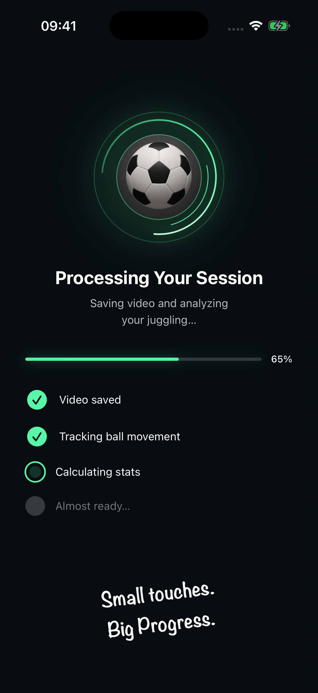
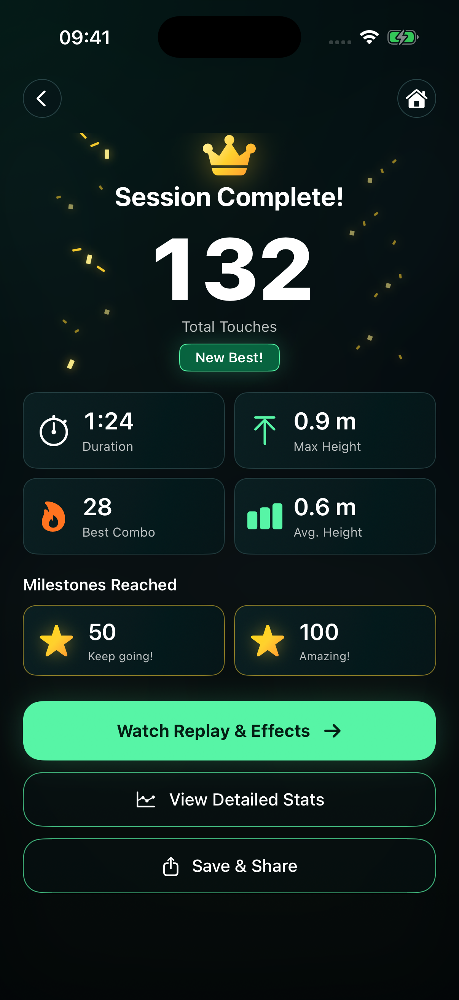
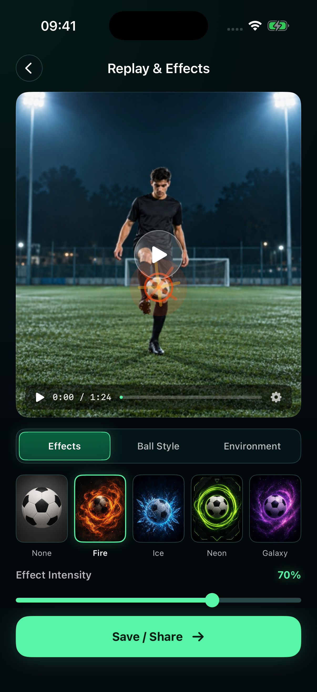
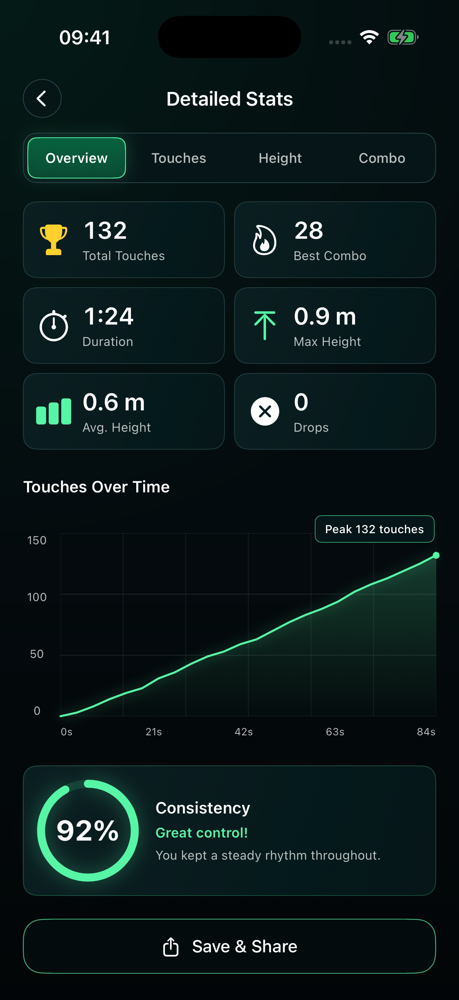
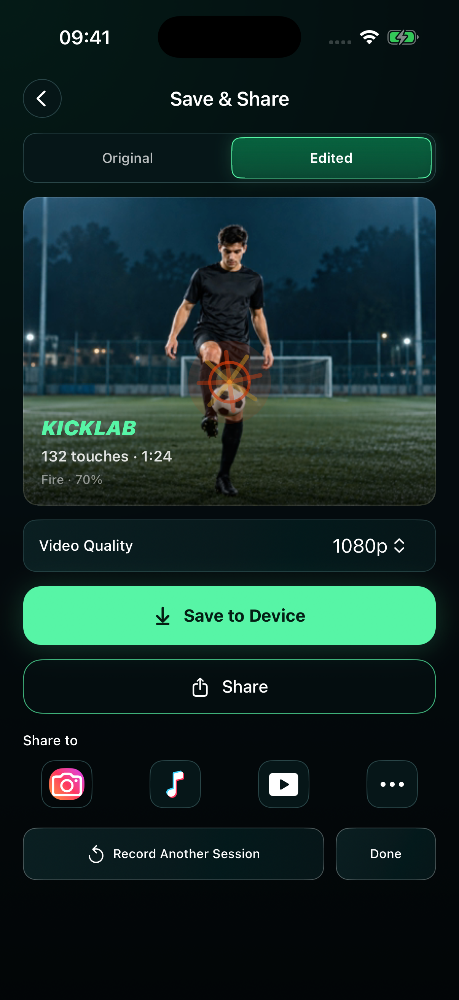
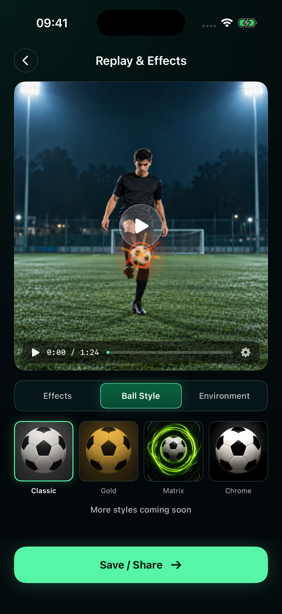
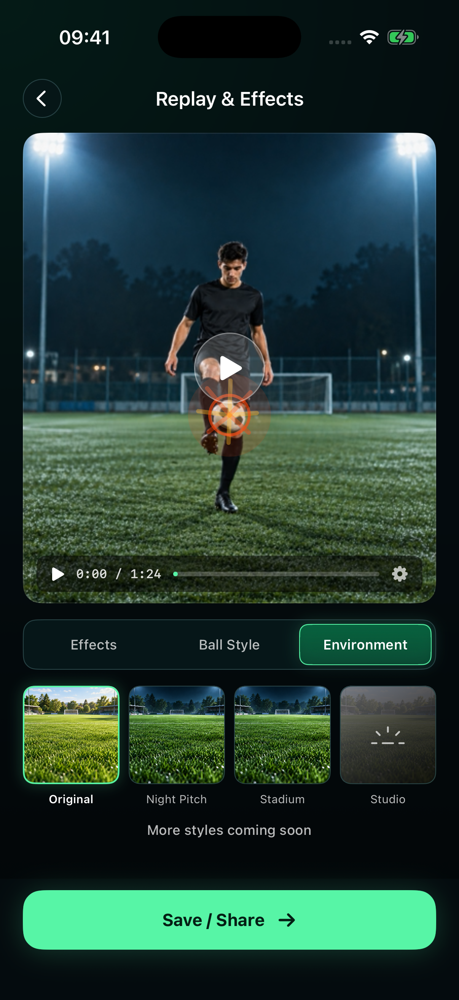

One editor. Three consistent tabs.


This pass changes presentation. Recording, analysis, effect rendering, selection and export logic are unchanged. Ball Style and Environment retain their existing coming-soon behavior. Capture HUD styling was updated; real-camera operation and saving/sharing were not exercised in this visual review.